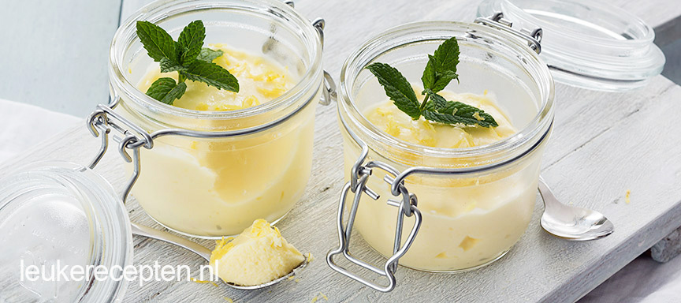

Frisse citroenmousse
Deze luchtige mousse met citroensmaak maak je eenvoudig met deze 5 ingredienten
Ingrediënten
- 60 gr suiker
- 1 citroen
- 125 ml slagroom
- 2 eieren
- 3 blaadjes gelatine
- Munt om te garneren
materialen
Bereiding

- Laat de blaadjes gelatine weken in koud water. Rasp de citroen en pers hem uit. Gebruik eventueel een zeef om de pitjes op te vangen. Verwarm het citroensap in een pannetje. Voeg de uitgeknepen gelatine toe en laat hierin oplossen. Laat iets afkoelen. Splits de eieren. Klop het eigeel met de suiker schuimig met de mixer. Voeg het citroensap toe en mix er kort door. Klop de slagroom stijf in een andere kom en meng vervolgens met het citroenmengsel. Klop als laatste de eiwitten stijf in een schone kom met schone mixer en spatel deze door het romige citroenmengsel. Verdeel het mengsel over 4 glaasjes en laat minimaal 2 uur opstijven in de koelkast. Garneer de citroenmousse met de citroenrasp en wat munt.